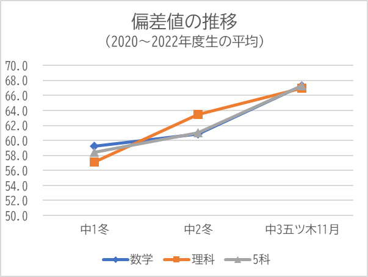
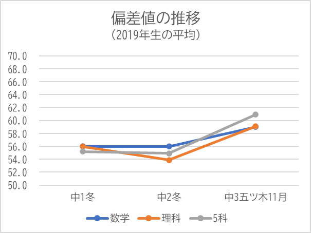
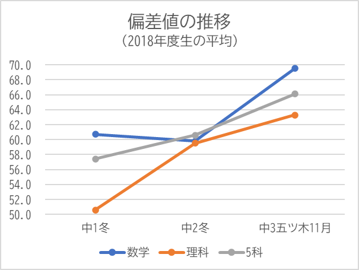

集団授業コース
○中１～３年生対象
指導科目/授業日数…５科目/週３日 （中３は９月以降 ＋模擬テスト週１日）
定期テスト対策…全科目
※小学部は再開準備中です。
○難関高校受験指導
堀川、嵯峨野、西京などの公立独自入試校、高専、洛南などの難関高校受験に対応します。基礎からハイレベルまでを丁寧な解説でつなぎ、生徒の理解を助けます。
京都府には五ツ木偏差値60～65の範囲に入る公立高校がほとんどありません。そこで、この偏差値の壁に直面する生徒が落ちついて勉強できて、しっかりと成長できる場を提供しようと考えました。そして、進路指導も的確な合否判定はもちろんのこと、ひとりひとりの個性を踏まえてアドバイスを行い、納得して志望校を選択していただけるように心掛けています。
○一学年一クラス
きちんとした学習環境を提供しようとすると、個人では限りがあります。自分の能力以上のことはできませんが、お預かりした生徒のお役に立てるよう、最大限努力します。そのための一学年一クラスです。
各学年とも定期テストの塾生平均点は５科目おおむね４２０～４５０点台です。個々で見ると学校平均点前後の生徒から４８０点レベルの生徒まで学んでいます。
学校平均点前後だと授業レベルに合わない科目がでてきます。
一学年一クラスなのでクラス替えができません。ぬるいと感じたり厳しいと感じたりする場合は、できるだけご要望に応えられるよう努めますが、叶わないときには、申し訳ありませんが集団授業コースから外れる選択をしていただく場合があります。
○定期テスト対策
全科目の対策を実施しています。
過去問の配布、暗記系の確認テスト以外は、自習と質問が中心です。
進学後を見据えて、対策し過ぎないことがポイントです。
各学年とも定期テストの塾生平均点は５科目おおむね４２０～４５０点台です。
○良い成績は良い解説から
テキストに付属の解答・解説をそのまま使わず、一から書き直しています。
生徒の反応をみながら修正を続けてきた成果が詰まっています。
（生徒曰く、手書きであることも、難しさのハードルを下げる要素とのこと。）
特に理数系は良い解説を読み込んで、思考を真似るのが成績向上の近道です。
映像による解説も充実していきます。
○チェックをつけて繰り返す
テストの多い塾です。小刻みに目標設定することで復習しやすく、期限付きのテストで計画性が養われます。
授業中にたびたび「チェックをつけて繰り返している？」と聞きます。
「理解するまで何度も読み、必要なだけ復習する」ということです。
この積み重ねが、「復習ぐらいは自分でする」習慣につながります。
大学受験で中高一貫生との競争に勝つためには、早いうちから自分の必勝パターンを身につけるべきです。それは、私の塾では「チェックをつけて繰り返す」です。
○中１中２で時間の使い方を
勉強を主軸に置きながらも部活に熱中し、その他の活動も積極的に。彼らになってほしいのは「勉強だけ」ではなく「勉強も」できる人です。
そのためには、時間の使い方にけじめをつけ、メリハリのある生活リズムをつくること、つまり余白の自己管理が何より大切です。
○中３の秋、部活動引退後にめざましく伸びる
培ってきた余白の自己管理がここで発揮されます。中３の秋以降、井上塾では授業時間数は増えるものの、授業は週３日（＋模擬テスト週１日）のまま。他の塾では日数が増える時期です。しかし、人の心に火がつけば、自己管理に従って勉強した方が、かえってプラスにはたらきます。２０２０～２２年度の合格率は３年連続１００％です。
自習室はほぼ毎日使えます。先生の手が空いていれば、質問は即解決できます。
成績は５科目ともよく伸びますが、数学・理科の伸びは特筆です。
| 進路 |
| 嵯峨野 |
2 |
| 南陽・SR |
2 |
| 城南菱創・教養 |
1 |
| 奈良高専 |
1 |
| 同志社国際 |
2 |

| 進路 |
| 奈良高専 |
1 |
| 同志社女子 |
1 |
| 立命館宇治 |
2 |
| 立命館守山 |
1 |
| 京都橘 |
1 |
| 龍大平安 |
1 |

| 進路 |
| 堀川 |
2 |
| 南陽・SR |
2 |
| 南陽 |
1 |
| 同志社国際 |
2 |
| 育英西・立命 |
1 |

○ひたむきな努力はきっと実を結ぶ
心に火のついた人は本当にすごい。
なかなか質問できなかった生徒が少しずつできるようになり、チェックをつけても繰り返せなかった生徒が熱心に解説を読むようになる。毎年繰り返される光景ですが、彼らのひたむきな姿には本当に頭が下がります。
伝えたいことが通じたとき、感謝の気持ちでいっぱいになります。
そして、じっと待ってくださった保護者の方々にも感謝です。
それでも、悔し涙の生徒はいます。
つらく悲しいことですが、数年後、大学に合格したとき、就職が決まったとき、ず報告に来てくれると、胸のつかえがとれたように一緒になって大喜それができるのも、この仕事の有難さ、やりがいだと思います。
大事なのは、「どこに行ったのか」ではなく、「どんな過程を歩んだのかあなたが歩んでいる道も、未来へ通じる過程です。